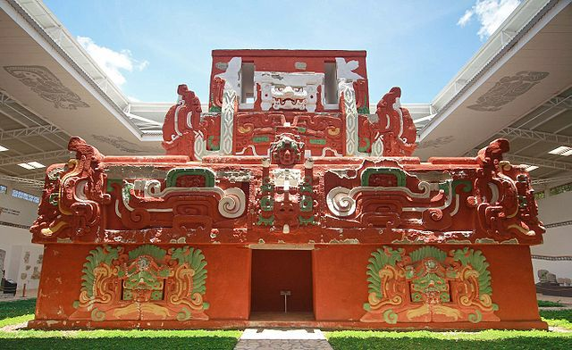
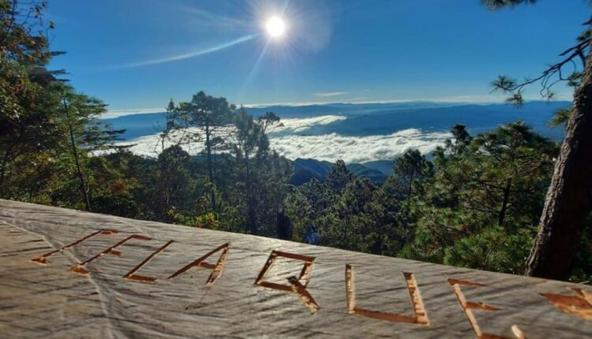
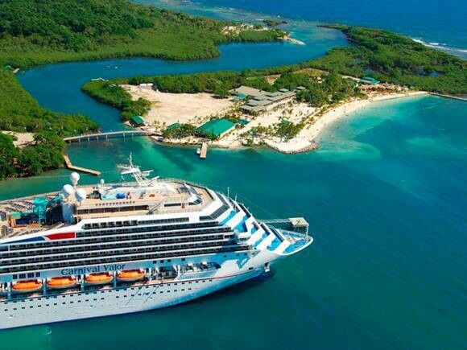

CONOCE HONDURAS
Descubre los lugares bonitos de Honduras
Honduras tiene muchos lugares para visitar, desde playas y montañas hasta sitios históricos. En esta página puedes conocer algunos destinos que vale la pena visitar.

Una aventura para cada viajero
Conoce nuestras rutas turísticas y descubre la historia, las tradiciones y la riqueza natural de nuestro país.

RUTA 01 · OCCIDENTE
Ruta Maya y Arqueología
Copán Ruinas, Copán
Copán Ruinas es uno de los lugares históricos más conocidos de Honduras. Aquí se pueden visitar las ruinas mayas, conocer un poco de su historia y recorrer las calles del pueblo.
Principales atractivos
- Parque Arqueológico de Copán.
- Escalinata de los Jeroglíficos.
- Estelas y esculturas mayas.
- Museos y calles del pueblo de Copán Ruinas.
Dificultad de acceso: baja a moderada. El acceso al parque es por carretera, aunque algunos recorridos requieren caminar por senderos y superficies irregulares.
Distancias y tiempos estimados
| Ciudad de origen | Distancia aproximada | Altitud del destino | Tiempo estimado |
|---|---|---|---|
| Tegucigalpa | 363 km | Aprox. 600 m s. n. m. | 6–7 horas |
| San Pedro Sula | 181 km | Aprox. 600 m s. n. m. | 3–4 horas |

RUTA 02 · OCCIDENTE
Ruta Lenca y Pueblos con Encanto
La Esperanza, Intibucá
La Esperanza, en Intibucá, es conocida por su clima fresco y sus paisajes montañosos. También es un buen lugar para conocer las costumbres, las artesanías y la comida del pueblo lenca.
Principales atractivos
- La Gruta.
- Mercados y artesanías locales.
- Tradiciones y gastronomía lenca.
- Paisajes montañosos y clima fresco.
Dificultad de acceso: baja a moderada. Se llega por carretera; algunas visitas a comunidades y atractivos rurales pueden requerir recorridos adicionales.
Distancias y tiempos estimados
| Ciudad de origen | Distancia aproximada | Altitud del destino | Tiempo estimado |
|---|---|---|---|
| Tegucigalpa | 170 km | 1,700 m s. n. m. | 3–4 horas |
| San Pedro Sula | 190 km | 1,700 m s. n. m. | 4–5 horas |

RUTA 03 · ECOTURISMO
Ecoturismo y Bosques Nublados
Parque Nacional Montaña de Celaque
El Parque Nacional Montaña de Celaque tiene bosques, senderos y diferentes especies de plantas y animales. Allí se encuentra el Cerro Las Minas, el punto más alto de Honduras, con unos 2,849 metros de altura.
Principales atractivos
- Senderos entre bosques nublados.
- Cerro Las Minas.
- Observación de aves y naturaleza.
- Cascadas y miradores naturales.
Dificultad de acceso: variable. Algunos senderos son de dificultad baja, mientras que el ascenso a la cima es de dificultad alta y requiere preparación física y equipo apropiado.
Distancias y tiempos estimados
| Ciudad de origen | Distancia aproximada | Altitud máxima | Tiempo estimado |
|---|---|---|---|
| Tegucigalpa | 300 km | 2,849 m s. n. m. | 5–6 horas hasta Gracias |
| San Pedro Sula | 220 km | 2,849 m s. n. m. | 4–5 horas hasta Gracias |
Desde Gracias se necesita transporte adicional hasta la entrada del parque.

RUTA 04 · CARIBE
Caribe y Arrecifes
Roatán, Islas de la Bahía
Roatán es una isla de Honduras conocida por sus playas y sus aguas claras. Muchas personas la visitan para nadar, o bucear y disfrutar del mar Caribe.
Principales atractivos
- Playas de West Bay.
- Snorkel y buceo en los arrecifes.
- West End y sus comercios locales.
- Paseos en barco y actividades marinas.
Dificultad de acceso: baja para llegar a los principales centros turísticos. El traslado requiere vuelo o transporte marítimo. Algunas actividades acuáticas requieren equipo y guía.
Distancias y tiempos estimados
| Ciudad de origen | Distancia terrestre a La Ceiba | Traslado marítimo | Tiempo total aproximado |
|---|---|---|---|
| Tegucigalpa | 200 km aprox. | 1 hora en ferry | 5–7 horas |
| San Pedro Sula | 190 km aprox. | 1 hora en ferry | 4–6 horas |
Los tiempos no incluyen esperas en la terminal, registro, condiciones del mar ni traslados dentro de Roatán.
Antes de emprender tu viaje
Las distancias y el tiempo de viaje pueden cambiar dependiendo del tráfico, el clima y cómo estén las carreteras. Por eso, es mejor revisar las condiciones antes de salir.
Solicitar un tour